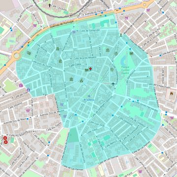

Nuestra Señora de la Asunción
- Arciprestazgo
- Móstoles
- Población
- Móstoles
- Dirección postal
- Pza. Ernesto Peces, 1
- Código postal
- 28931
- Extensión
- 0,74 km² (74 ha)
- Teléfono
- 912 264 224
- Correo electrónico
- parroquianasuncionmostoles@gmail.com
- Información demográfica
- De la parroquia · De la población (Móstoles) · Del arciprestazgo (Móstoles)
- Resumen para imprimir
- La parroquia en una hoja (A4)


Descargar mapaLímites según decreto
" Partiendo del punto de confluencia de la Carretera Nacional V con la calle Zaragoza, siguen por el eje de esta calle hasta la confluencia con la calle Villaamil; siguen por el eje de dicha calle hasta su intersección con la calle Montero; continúan por el eje de esta última hasta la calle Arroyomolinos, por la que siguen hasta su encuentro con la calle Alcalde de Zalamea; siguen por esta calle hasta encontrar la calle Moraleja de En medio; continúan por el eje de esta calle hasta la calle Las Palmas y siguen por dicha calle Las Palmas y la Travesía de Leganés hasta su encuentro con la calle San Marcial; continúan por el eje de esta última hasta la Avenida de la Constitución (antes Generalísimo). Atraviesan la Avenida de la Constitución continuando por el eje del Paseo de Goya hasta su intersección con la Carretera Nacional V, por la que continúa hasta su punto de confluencia con la calle Zaragoza, punto de partida" (Decreto de rectificación de límites de 12-9-84)
¿Algún dato de esta parroquia es incorrecto o ha cambiado? Comuníquenoslo.